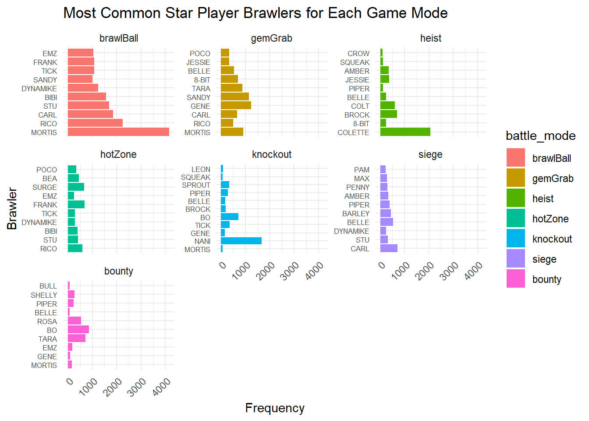
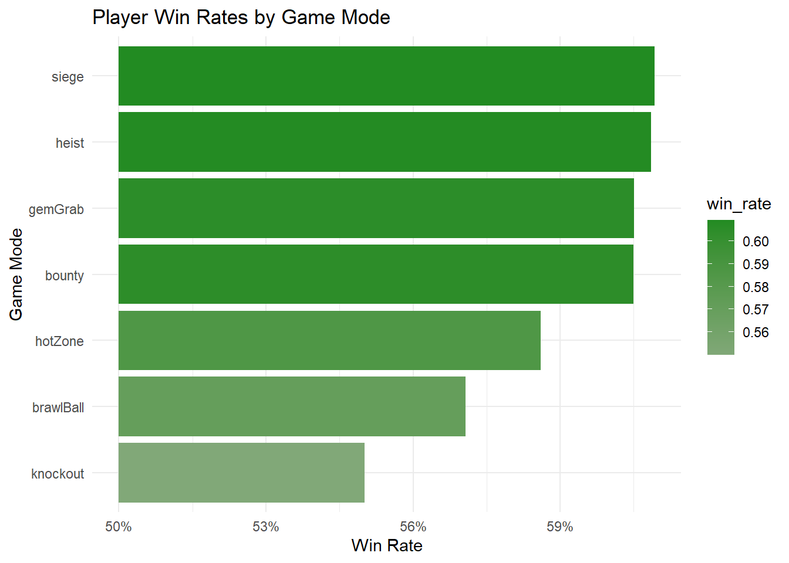
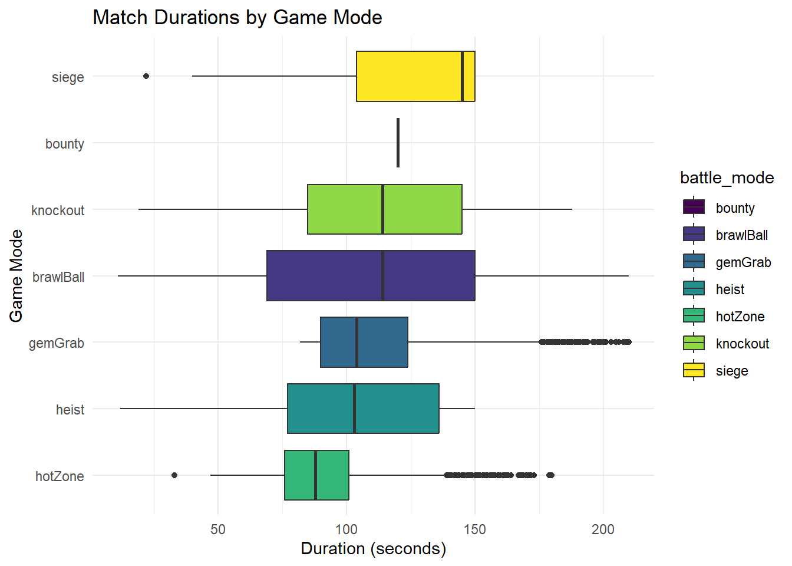
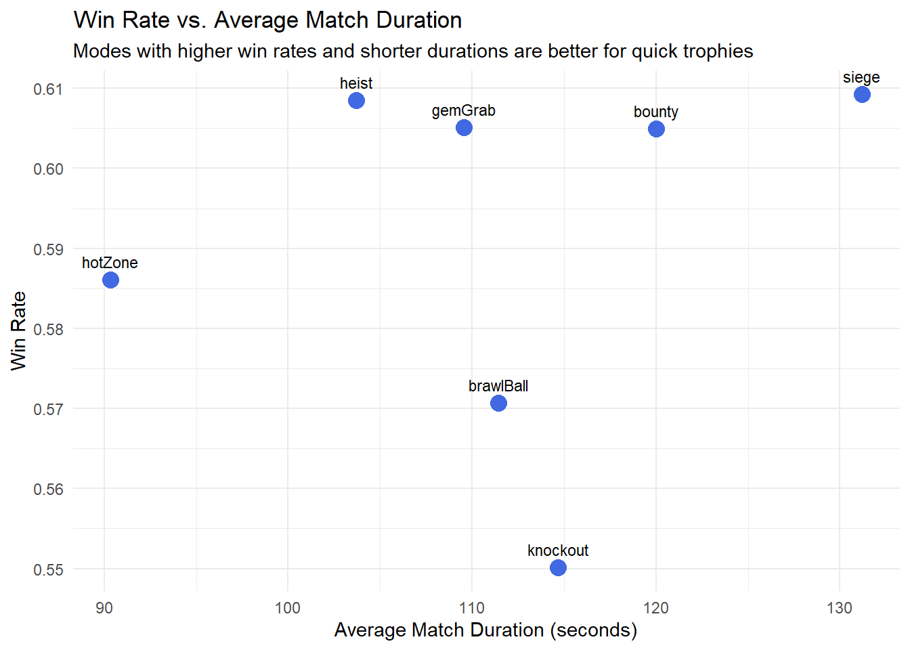
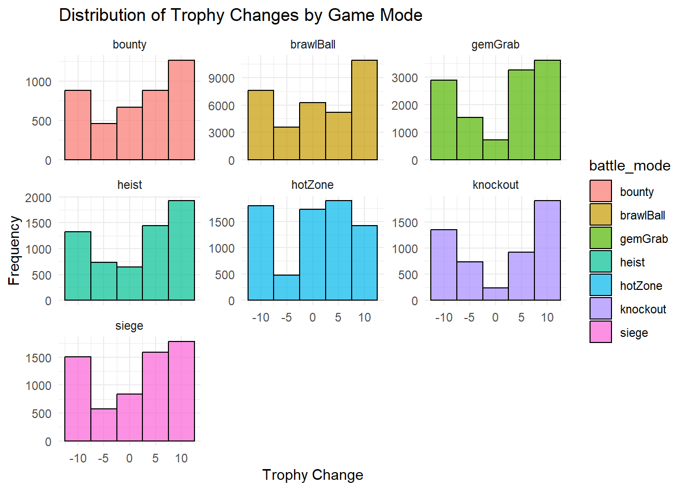
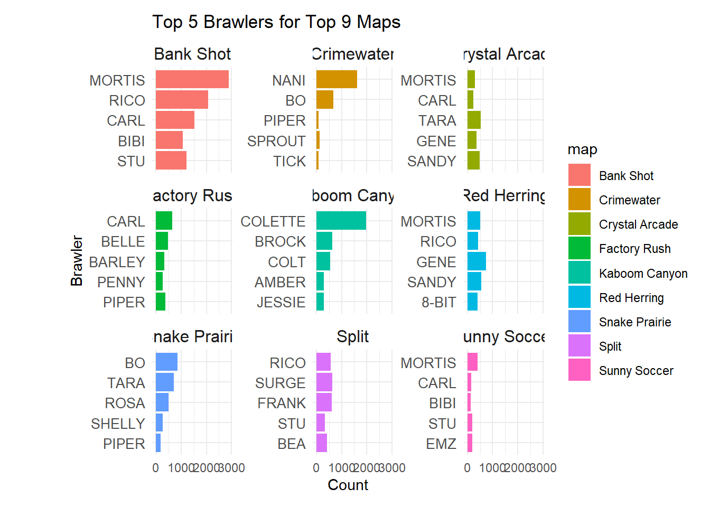
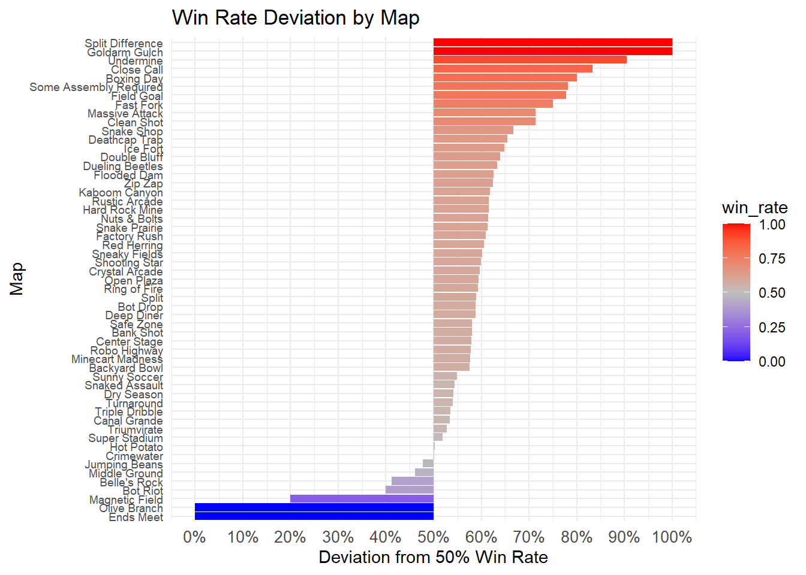
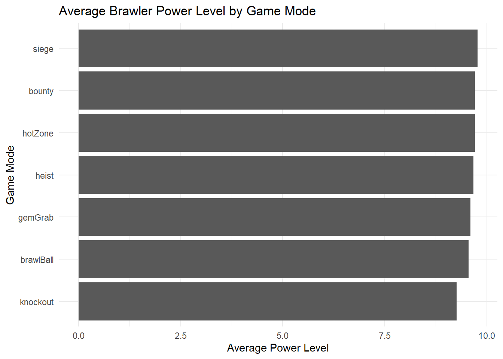
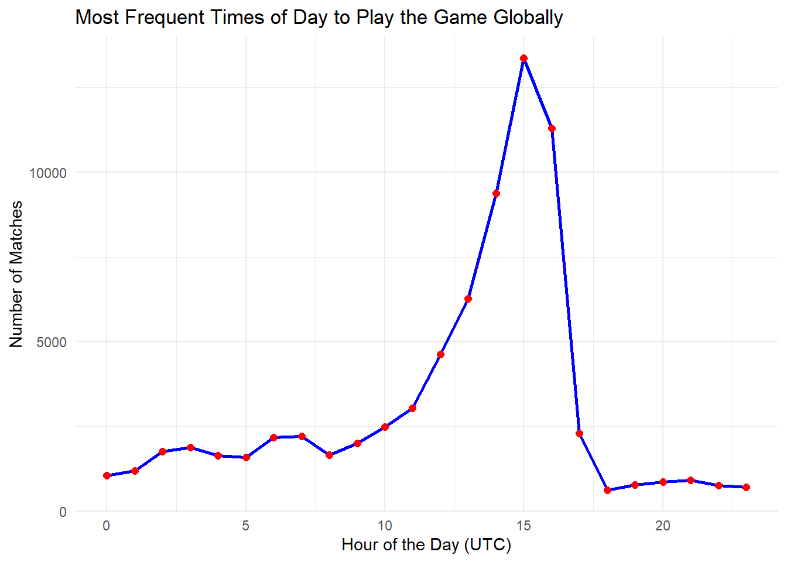
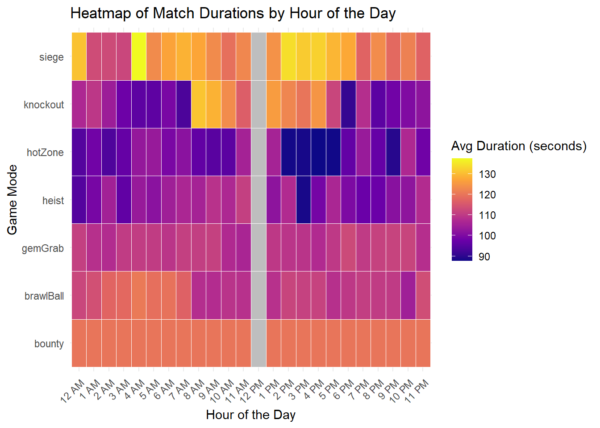

This section highlights key findings from our exploratory data analysis (EDA) on the Brawl Stars dataset.
3.1 Which brawlers are most frequently used by players, and how does this change across different game modes?
Code
library(dplyr)
Attaching package: 'dplyr'
The following objects are masked from 'package:stats':
filter, lag
The following objects are masked from 'package:base':
intersect, setdiff, setequal, union
Code
library(ggplot2)library(tidyr)library(forcats)# read in and prep the datadata <-read.csv("battles_data_full.csv")# function to do the opposite of %in% (%!in%)'%!in%'<-function(x, y) !('%in%'(x, y))# filter out unwanted battle modes & ensure all brawler name columns are non-emptydata <- data |>filter( battle_mode %!in%c("soloShowdown", "roboRumble", "loneStar", "duoShowdown", "bigGame"), star_player_brawler_name !='' ) |>drop_na()# star player frequency by game modebrawler_usage <- data |>group_by(battle_mode, star_player_brawler_name) |>summarise(count =n(), .groups ='drop') # select top 10 brawlers per modetop_brawlers <- brawler_usage |>group_by(battle_mode) |>slice_max(order_by = count, n =10) |>ungroup()# determine the facet and bar ordersfacet_order <- top_brawlers |>group_by(battle_mode) |>summarise(total_count =sum(count), .groups ='drop') |>arrange(-total_count) |>pull(battle_mode)bar_order <- top_brawlers |>arrange(-count) |>pull(star_player_brawler_name) |>unique()# relevel the factorstop_brawlers <- top_brawlers |>mutate(battle_mode =factor(battle_mode, levels = facet_order),star_player_brawler_name =factor(star_player_brawler_name, levels = bar_order) )ggplot(top_brawlers, aes(x = star_player_brawler_name, y = count, fill = battle_mode)) +geom_bar(stat ='identity') +coord_flip() +facet_wrap(~battle_mode, scales ='free_y') +labs(title ='Most Common Star Player Brawlers for Each Game Mode', x ='Brawler', y ='Frequency') +theme_minimal() +theme(axis.text.x =element_text(angle =45, hjust =1)) +theme(axis.text.y =element_text(size =6))

From this plot, we can see how different brawlers can be heavily favored in some game modes compared to others. First, we see how modes like brawlBall, heist and knockout all have favored brawlers while the rest seem relatively evenly distributed. Knockout is a mode where kills are important, so nani–a marksmen–would be a good pick. Brawl ball is a soccer based mode, so mortis being a character with excellent mobility makes him a great pick.
Note: the ordering is not consistent across facets because each mode will have a different set of top 10 brawlers.
3.2 How do player win rates vary by game mode?
Code
# win rates by game modewin_rates <- data |>group_by(battle_mode) |>summarise(win_rate =mean(battle_result =="victory"), .groups ='drop')# visualize win rates as a diverging chartggplot(win_rates, aes(x =reorder(battle_mode, win_rate), y = win_rate -0.5, fill = win_rate)) +geom_bar(stat ='identity') +scale_fill_gradient2(low ="red", mid ="gray", high ="forestgreen", midpoint =0.5) +coord_flip() +labs(title ='Player Win Rates by Game Mode',x ='Game Mode',y ='Win Rate' ) +scale_y_continuous(labels =function(y) paste0(50+ y *100, "%") ) +theme_minimal()

Interestingly enough, the win rate for every game mode is above 50%. We took this to mean that our data is sampled from above average players of the game. From just this graph, it is difficult to tell if game modes like siege are easier to win compared to modes like knockout, if our sampled players are better at specific modes, or some other unspecified reason.
3.3 What are the typical lengths of matches, and are there patterns tied to specific game modes?
Code
library(viridis)
Loading required package: viridisLite
Code
library(viridisLite);ggplot(data, aes(x =reorder(battle_mode, battle_duration), y = battle_duration, fill = battle_mode)) +geom_boxplot() +scale_fill_viridis(discrete =TRUE) +coord_flip() +labs(title ='Match Durations by Game Mode', x ='Game Mode', y ='Duration (seconds)') +theme_minimal()

All game modes have a specified time limit before they end automatically. Most modes also have a designated win condition that will terminate the game early. From this plot, we can see that brawl ball and knockout games seem to have the most variation in lengths, with hotzone and gem grab have smaller variations. We believe the time associated with bounty may be incorrect, as it is not logical for every bounty game to take exactly 2 minutes. It is interesting that gemGrab and hotZone have so many outliers on the longer end of the duration, since their time limits aren’t as strict as any of the other modes.
3.4 Are there game modes that are both fast and frequently provide wins?
Code
# calculate average match durationmatch_duration <- data |>group_by(battle_mode) |>summarise(avg_duration =mean(battle_duration, na.rm =TRUE), .groups ='drop')# combine win rates and match durationscombined_metrics <- win_rates |>inner_join(match_duration, by ="battle_mode")# visualize combined metricsggplot(combined_metrics, aes(x = avg_duration, y = win_rate, label = battle_mode)) +geom_point(size =4, color ='royalblue') +geom_text(vjust =-1, size =3) +labs(title ='Win Rate vs. Average Match Duration', x ='Average Match Duration (seconds)', y ='Win Rate', subtitle ='Modes with higher win rates and shorter durations are better for quick trophies') +theme_minimal()

From this plot, a player would be able to determine which modes take the shortest amount of time and are the most likely to lead to wins. From this graph, it seems that hotzone would be the clear winner, but heist could also be a candidate. Knockout seems to be the worst pick, with the lowest win rate and a seemingly above average match duration.
3.5 Distribution of Trophy Changes by Game Mode
Code
ggplot(data, aes(x = trophy_change, fill = battle_mode)) +geom_histogram(binwidth =5, color ='black', alpha =0.7) +facet_wrap(~battle_mode, scales ='free_y') +labs(title ='Distribution of Trophy Changes by Game Mode',x ='Trophy Change',y ='Frequency' ) +theme_minimal()

From these graphs, we can see that many of the trophy changes seem to be slightly left-skewed (a concentration of points on the right). As we discussed previously, this is likely because our sample of data is from higher skill players. Bounty, siege, and heist seem to be the most left-skewed. Gem grad and knockout seem to be more evenly balanced, giving almost a quadratic shape. It is much harder to tie in these two game modes, so it make sense for the points to be concentration on either side of the zero.
3.6 Which maps are most played for each game mode?
Code
# calculate map usage frequenciesmap_usage <- data |>group_by(map) |>filter(map !='') |>drop_na() |>summarise(count =n(), .groups ='drop') |>arrange(desc(count)) |>slice_head(n =9) # grab top 9# filter data for only the top 9 mapstop_map_data <- data |>filter(map %in% map_usage$map)# group by map and brawler, limit to top 5 brawlers per mapbrawler_usage <- top_map_data |>group_by(map, star_player_brawler_name) |>summarise(count =n(), .groups ='drop') |>arrange(map, desc(count)) |>group_by(map) |>slice_max(order_by = count, n =5)# plot the dataggplot(brawler_usage, aes(x =reorder(star_player_brawler_name, count), y = count, fill = map)) +geom_bar(stat ='identity') +coord_flip() +facet_wrap(~map, scales ='free_y') +theme_minimal() +#scale_fill_brewer(palette = 'Set3') + labs(title ='Top 5 Brawlers for Top 9 Maps',x ='Brawler',y ='Count' ) +theme(axis.text.y =element_text(size =10),strip.text =element_text(size =12),plot.margin =margin(10, 10, 10, 50) )

From this data, we can see how different brawlers are favored across the 9 most popular maps. For most of them, a brawler is not heavily favored. For some of the maps, the most favored brawler also correlates with the common game mode (bank shot and mortis are brawl ball while kaboom canyon and colette are heist).
3.7 Which maps have the best win rates?
Code
# calculate win rates for each mapmap_win_rate <- data |>filter(map !='') |>drop_na() |>group_by(map) |>summarise(win_rate =mean(battle_result =="victory"), .groups ='drop')# visualize win rate deviationggplot(map_win_rate, aes(x =reorder(map, win_rate), y = win_rate -0.5, fill = win_rate)) +geom_bar(stat ='identity') +coord_flip() +scale_fill_gradient2(low ="blue", mid ="gray", high ="red", midpoint =0.5) +scale_y_continuous(labels =function(x) scales::percent(x +0.5),breaks =seq(-0.5, 0.5, 0.1)) +labs(title ='Win Rate Deviation by Map', x ='Map', y ='Deviation from 50% Win Rate') +theme_minimal() +theme(axis.text.y =element_text(size =7),axis.text.x =element_text(size =10))

We can see that maps differ vastly in win rates within this dataset. Maps like Split Difference and Goldarm Gulch are exactly 100%, whereas Ends Meet and Olive Branch are exactly 0%. This indicates that these maps may cater excessively to specific strategies or team compositions. The balanced maps such as Hot Potato and Crimewater are right around 50%, suggesting that some maps can truly be an even playing field. This demonstrates how significantly map design can effect win rates and point to opportunities to optimize or balance maps with higher deviations. The sampled players may also have been particularly favored on specific battle maps, or certain maps may have been less played overall leading to skewed overall win rates.
3.8 How do the average brawler levels vary across game modes?
Code
power_levels <- data |>select(battle_mode, contains("_brawler_power")) |>pivot_longer(cols =starts_with("team"), names_to ="player", values_to ="power_level") |>group_by(battle_mode) |>summarise(avg_power_level =mean(power_level, na.rm =TRUE), .groups ='drop')ggplot(power_levels, aes(x =reorder(battle_mode, avg_power_level), y = avg_power_level)) +geom_bar(stat ='identity') +coord_flip() +labs(title ='Average Brawler Power Level by Game Mode', x ='Game Mode', y ='Average Power Level') +theme_minimal()

In general, it seems that the average power level for brawlers is nearly 10 across all game modes. Brawl ball is slightly lower and knockout seems to be noticeably lower. Knockout is a very skill based mode, where it is a direct 3v3, and if a player dies, they are out until a team is eliminated. This does not seem to give any insight into why it would have a lower average power level. One theory would be that people push trophies on their lower level brawlers in knockout since it’s a higher skill mode.
3.9 What times of day is the game played the most globally (UTC)?
Code
# extract the hour from battle_timedata <- data |>mutate(hour =as.integer(substr(battle_time, 10, 11)))# count matches by hourmatches_by_hour <- data |>group_by(hour) |>summarise(match_count =n(), .groups ='drop')# plot match frequency by hourggplot(matches_by_hour, aes(x = hour, y = match_count)) +geom_line(color ='blue', size =1) +geom_point(color ='red', size =2) +labs(title ='Most Frequent Times of Day to Play the Game Globally', x ='Hour of the Day (UTC)', y ='Number of Matches') +theme_minimal()

From this graph, we can see that the majority of matches appear to be played between 12 UTC and 16 UTC. We believe the data was sampled from ranked leaderboard players, so this likely correlates with the timezone the ranked players are from. We were intrigued that there is only one spike in the data, which would imply that one timezone contributes to the majority of the matches. It is possible this correlates with the end of the work day.
3.10 How do matches differ by hour of the day?
Code
# extract hourdata <- data |>mutate(hour_24 =as.integer(substr(battle_time, 10, 11)), hour_12 =ifelse(hour_24 ==0, 12, hour_24 %%12), # convert to 12h formatperiod =ifelse(hour_24 <12, 'AM', 'PM'), # add am/pmhour_am_pm =paste(hour_12, period)) # fix labels# remove rows with missing or malformed battle_time valuesdata <- data |>filter(!is.na(hour_am_pm) &!is.na(battle_duration))data <- data |>mutate(hour_am_pm =factor(hour_am_pm, levels =c('12 AM', paste(1:11, 'AM'), '12 PM', paste(1:11, 'PM'))))data <- data |>filter(!is.na(hour_am_pm) &!is.na(battle_duration) &!is.na(battle_mode))# average match duration by hour and battle modematch_duration_heatmap <- data |>group_by(hour_am_pm, battle_mode) |>summarise(avg_duration =mean(battle_duration, na.rm =TRUE), .groups ='drop')# fill up the complete grid of all hours and modescomplete_grid <-expand.grid(hour_am_pm =factor(c('12 AM', paste(1:11, 'AM'), '12 PM', paste(1:11, 'PM')), levels =c('12 AM', paste(1:11, 'AM'), '12 PM', paste(1:11, 'PM'))),battle_mode =unique(data$battle_mode))# merge the complete grid with the actual datamatch_duration_heatmap <- complete_grid |>left_join(match_duration_heatmap, by =c('hour_am_pm', 'battle_mode'))# plot the heatmapggplot(match_duration_heatmap, aes(x = hour_am_pm, y = battle_mode, fill = avg_duration)) +geom_tile(color ="white") +# change gridlinesscale_fill_viridis_c(option ="plasma", na.value ="gray") +# set NAs to graylabs(title ='Heatmap of Match Durations by Hour of the Day',x ='Hour of the Day',y ='Game Mode',fill ='Avg Duration (seconds)') +theme_minimal() +theme(axis.text.x =element_text(angle =45, hjust =1))

Unfortunately, we have no data from 12pm after removing gamemode and battle duration nulls. Bounty is consistent across every hour of the day, which cross references our boxplot graphs. Hotzone in general seems to have shorter durations, which correlates with our average win duration graph. It seems that between 2pm and 5pm would be the best time to play short matches with longer win rates. While most game modes stay relatively consistent, knockout’s time seems to change drastically depending on the time of day. From 7 am to 8 am there is an extreme jump in length. Then again from 4pm to 6pm, there’s a more gradual but still noticeable decline in time. This seems counter intuitive because 8am to 4pm is common work hours, where it would likely make sense to have shorter duration matches.